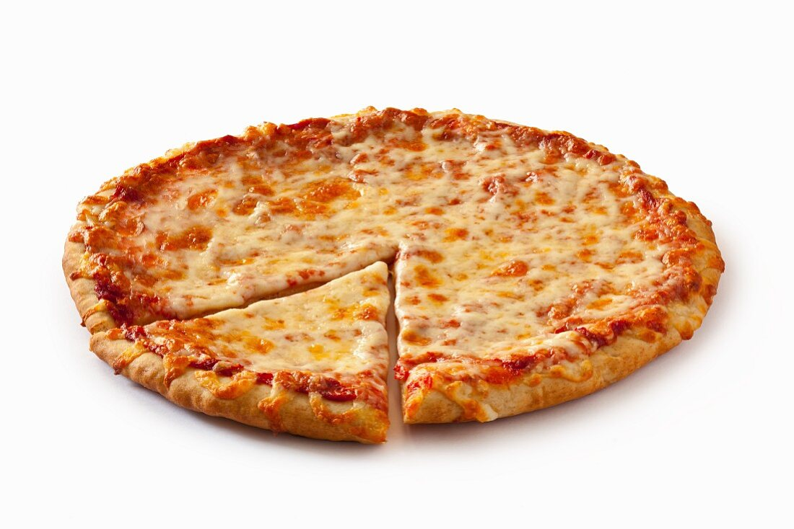

Pizza Recipie

Ingredients
For the Dough:
-
500g strong white bread flour (plus extra for dusting) 10g fine sea salt
-
7g dried yeast or 20g fresh yeast 325ml lukewarm water 1 tablespoon
olive
For the Sauce:
- 1 can (400g) of San Marzano tomatoes,
- crushed 1 clove garlic, minced
- 1 tablespoon extra virgin olive oil
-
Salt to taste Freshly ground black pepper A few fresh basil leaves,
torn For the Topping:
-
250g fresh mozzarella, sliced Fresh basil leaves Extra virgin olive oil
for drizzling
- Grated Parmigiano-Reggiano cheese (optional)
-
Activate the Yeast: If using dried yeast, mix it with
the lukewarm water and let it sit for 5-10 minutes until frothy. If
using fresh yeast, crumble it into the lukewarm water and stir to
dissolve.
-
Prepare the Dough: In a large bowl, mix the flour and
salt. Make a well in the centre and add the yeast mixture (or dissolved
fresh yeast) and olive oil. Mix until a sticky dough forms.
-
Knead the Dough: Transfer the dough onto a floured
surface and knead for about 10 minutes until smooth and elastic. Place
the dough in a lightly oiled bowl, cover with a damp cloth, and let it
rise in a warm place for about 1-2 hours or until it has doubled in
size.
-
Divide the Dough: Once risen, knock back the dough
(punch the air out) and divide it into 2-4 equal portions, depending on
the desired size of your pizzas. Shape each portion into a ball, cover
with a damp cloth, and let them rest for another 20 minutes.
2. Making the Sauce:
-
Prepare the Sauce: In a bowl, mix the crushed San
Marzano tomatoes with minced garlic, olive oil, salt, pepper, and torn
basil leaves. Adjust seasoning to taste. The sauce should be fresh and
not overly cooked.
3. Assembling the Pizza:
-
Preheat the Oven: Place a pizza stone in the oven (if
available) and preheat it to its highest setting (250-300°C or
482-572°F). Allow it to heat up for at least 30 minutes.
-
Shape the Dough: On a floured surface, take a dough
ball and, using your hands, gently press it out into a circle. Stretch
and shape the dough to your desired thickness (typically, Margherita
pizza has a thin crust).
-
Add the Sauce and Toppings: Spread a thin layer of
tomato sauce over the base, leaving a small border around the edge.
Arrange the slices of fresh mozzarella evenly over the sauce. Drizzle a
little extra virgin olive oil over the top.
4. Baking the Pizza:
-
Bake the Pizza: Transfer the pizza to the preheated
pizza stone or a baking tray. Bake for 8-10 minutes, or until the crust
is golden and the cheese is bubbling and slightly browned.
5. Finishing Touches:
-
Serve: Remove the pizza from the oven and immediately
sprinkle with fresh basil leaves. Optionally, you can grate some
Parmigiano-Reggiano cheese on top and drizzle a bit more olive oil.
-
Enjoy: Slice and serve your Margherita pizza hot.